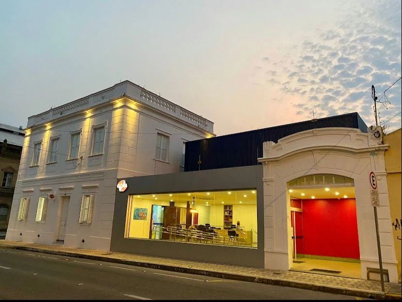
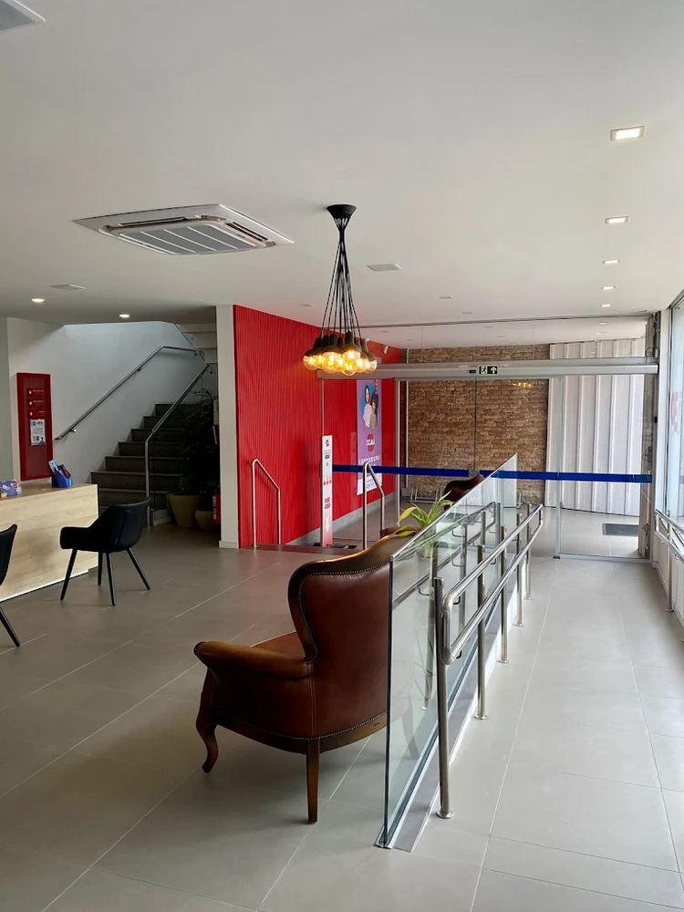
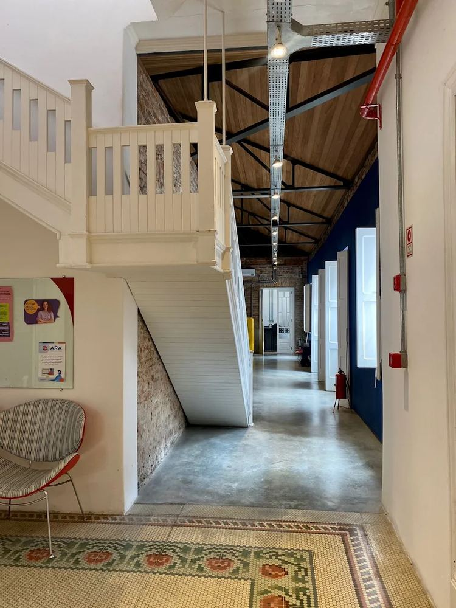
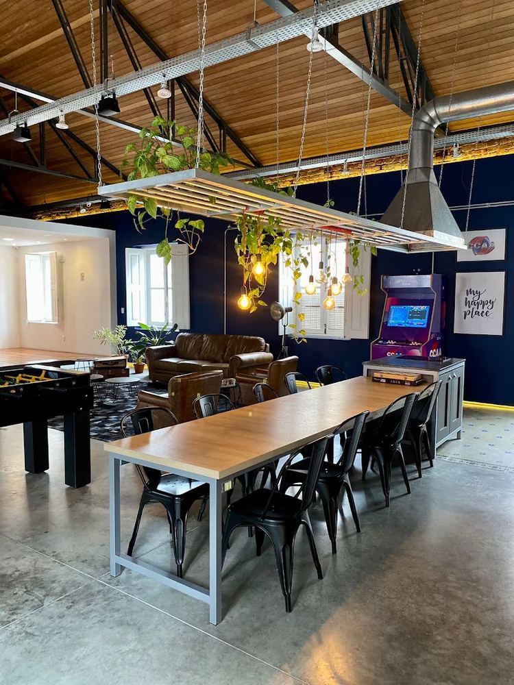
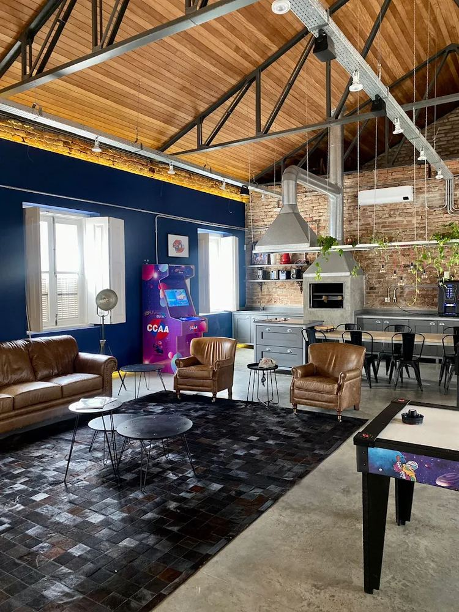
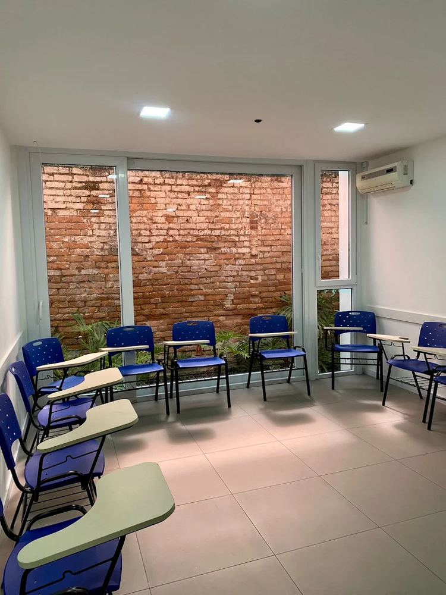
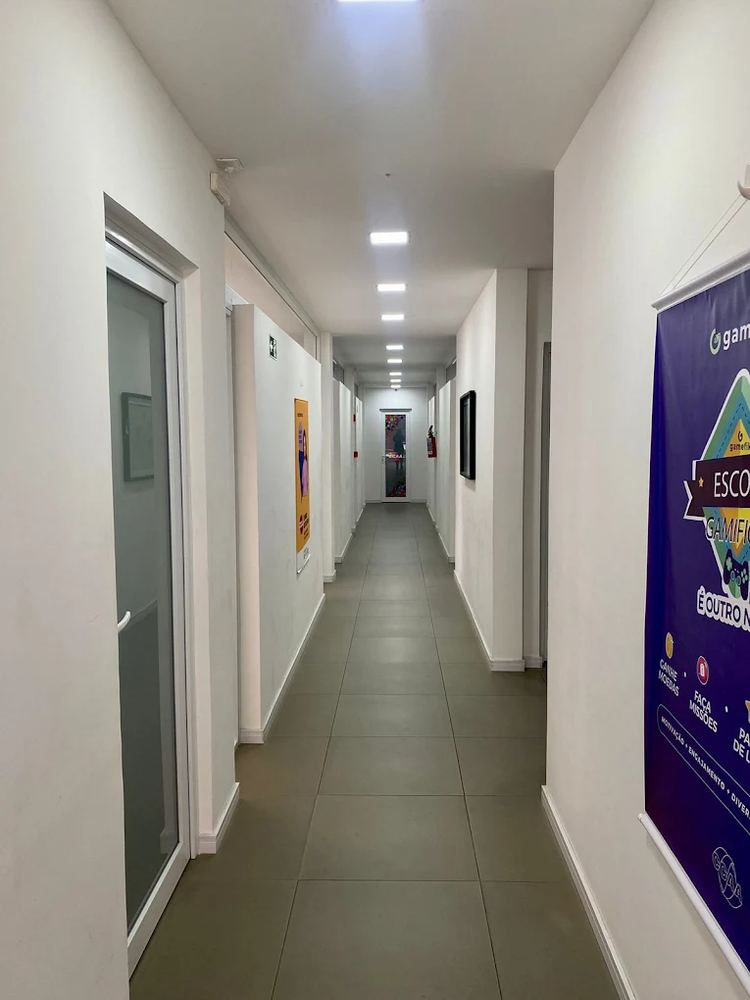
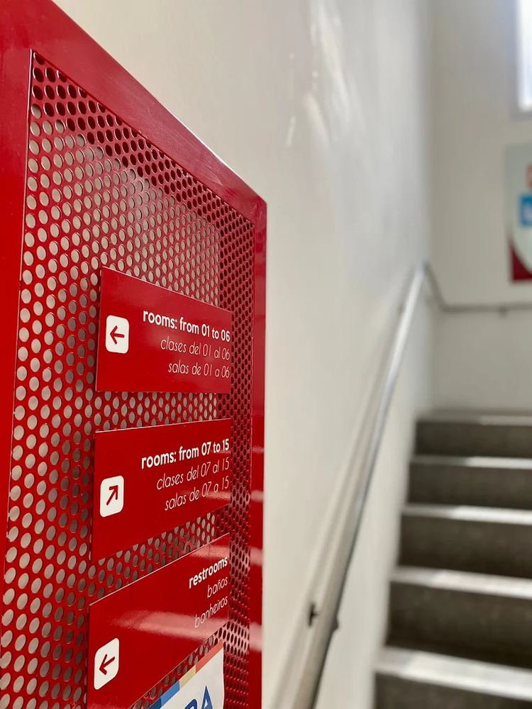
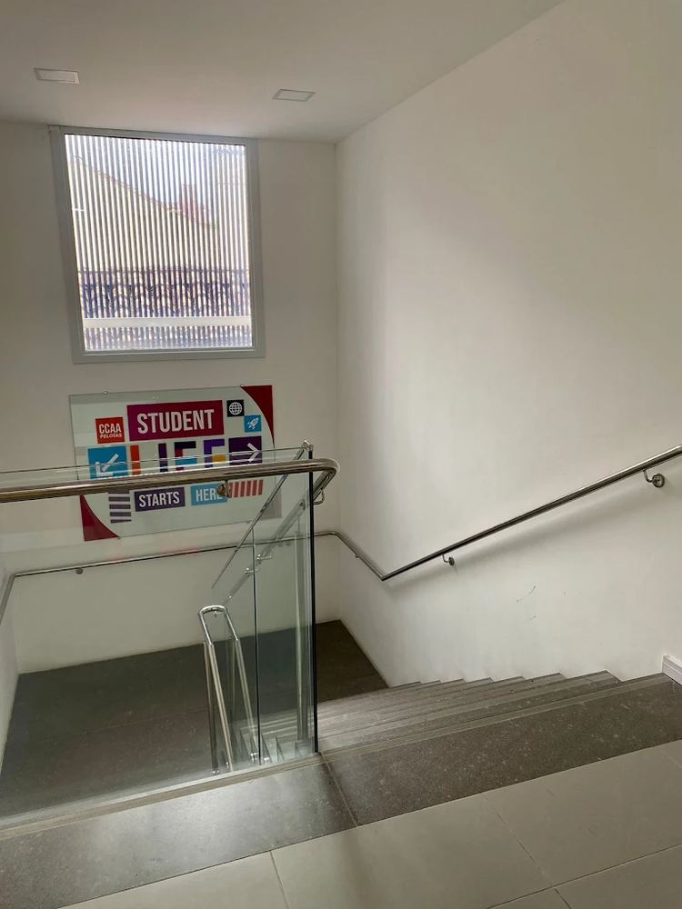
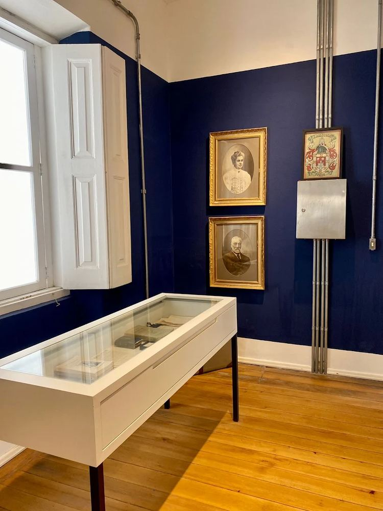

Jornada do aluno
Do primeiro contato com o inglês ao certificado final, semestre a semestre
Cada curso recebe o aluno pela idade, sem exigir os níveis anteriores, e a partir dos 12 anos o teste de nivelamento encaixa quem já possui conhecimento. Escolha o curso e veja o material real de cada semestre, o que se aprende e o que vem depois!
Por onde você quer começar?
A trilha abre a partir do curso escolhido. Dá pra trocar ou ver tudo a qualquer momento.
A trilha
Já é aluno? Marque o nível atual
Quer entender a fundo? Veja como o vocabulário evolui
Na infância, o vocabulário acelera
Palavras novas por nível, do Baby Class 1 ao Preteen Course 2
Os 8 níveis do Kids' Course são independentes. Uma criança que nunca estudou inglês entra direto no nível que acompanha a idade dela, sem passar pelos anteriores, porque cada material já foi pensado pra receber aluno novo.
O Baby Class nunca dobra aula no mesmo dia, mesmo quando isso encaixaria melhor na rotina dos pais. Com 3 a 5 anos, a criança não mantém atenção em duas aulas seguidas. As 2 aulas por semana existem por causa da criança, não por limite de horário.
No English, mais nível não significa mais palavras
Palavras novas por nível do English Course, com a referência CEFR de cada um
A referência CEFR vem da comparação oficial do CCAA: A1 nos níveis 1 a 3, A2 do 3 ao 5, B1 do 6 ao 9, B2 no 9 e 10, e C1 no 10 e 11. Os níveis de fronteira aparecem com as duas faixas porque o próprio quadro do CCAA os coloca nas duas.
Conheça o CCAA Pelotas
Inglês e espanhol num prédio histórico restaurado no Centro de Pelotas, com 15 salas de aula, espaço de convivência e atividades que vão além do livro.










Deslize pro lado pra ver mais fotos · toque pra ampliar
Os alunos aprendem a culinária americana na prática, cozinhando e falando inglês ao mesmo tempo.
Datas da cultura de língua inglesa viram atividade na escola.
Presencial ou online a cada aula, com o mesmo conteúdo e o mesmo material.
Faltou aula? O aluno repõe sem custo e não fica atrás da turma.
Tira dúvidas e conversa em inglês com o aluno fora do horário de aula.
Todo nível concluído rende certificado de promoção, sem custo.
O aluno ganha moedas e cumpre missões ao longo do semestre.
Climatizadas, com sinalização em três idiomas.
Eleito na categoria Escola de Idiomas em 2025.